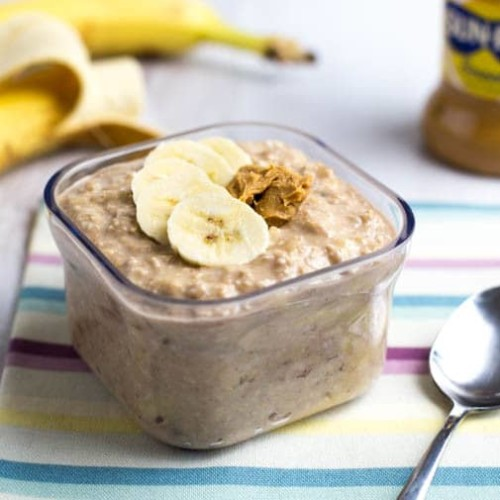

Credit goes to: https://www.houstonfoodbank.org/recipe-peanut-banana-overnight-oats/
The amount of flavor in this recipe is outstanding. Oats are good, and so are bananas. The sugary taste of this dish will have you craving more and more peanut butter in the evenings when nobody else is around. There is also vanilla flavor added, and this ingredient makes the dish even more tasty for many people.